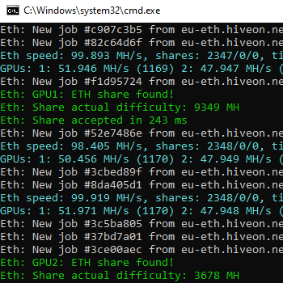

MINERIA


¿Qué significa minar criptomonedas?
Explicándolo de forma sencilla, la minería de criptodivisas es un proceso mediante el cual se buscar dar resolución a problemas matemáticos complejos. Los mineros son una parte fundamental de todo sistema de criptomonedas que opere dentro de una red Blockchain. Gracias al aporte de su tiempo y poder de computación para resolver esos problemas matemáticos, proporcionan una llamada "prueba de trabajo" para la red, verificando así las transacciones de Ether
Para cada bloque de transacciones, los mineros aplican su poder computacional para resolver el rompecabezas matemático.
Para ser más específicos, los mineros toman los metadatos de los encabezados únicos de cada bloque, datos que establecen una marca de tiempo y una versión de software, a través de una función hash, que genera una cadena de longitud fija de números y letras aleatorios sensibles a mayúsculas y minúsculas. Esta cadena se llama hash, y si el minero encuentra un hash que coincida con el objetivo actual, el bloque se considerará minado y se transmitirá a toda la red para que otros nodos validen y añadan la transacción a su copia de la cadena de bloques.
Antes de empezar, tendremos que elegir el hardware dedicado para configurar nuestra computadora para la minería a tiempo completo. Hay dos opciones: CPU (Unidad Central de Procesamiento), lo que significa usar el procesador de nuestra computadora, y GPU (Unidad de Procesamiento Gráfico).
Como minar Ethereum con Gpus
Paso 1 - Crea una Wallet(Billetera virtual)
Podes crear una Wallet en Bitso o desde nuestra seccion Billeteras virtuales
Paso 2 - Descargue el software de minería
Vamos a utilizar para minar nuestras criptomonedas el software de phoenixminer. Lo vamos a descargar desde el siguiente link O desde la pagina oficial https://phoenixminer.org/es/
Paso 3 - Edite el archivo bat
Para editar el archivo .bat vamos a utilizar 2 cosas
- Pool de mineria
- La direccion de nuestra wallet creada en el paso 1
Veamos el paso a paso
- Vamos a buscar el archivo "13_Ethereum-hiveon.bat" y hacemos click derecho en editar.
- Vamos a editar nuestra dirreccion de wallet creada en el paso 1 como lo indica la foto.
- Hacer doble click en 13_Ethereum-hiveon.bat y se te va a abrir una consola que deberia verse asi 

Es muy importante que ingreses tu wallet sino no vas a recibir los ingresos. Hay que tener en cuenta que el minero ya esta configurado para las pools de hiveon Desde la pagina en si uno puede consultar rentabilidad dia a dia, minimo pago, comisiones etc...
y listo ya estamos minando criptomonedas con nuestra placa de video
Paso 4 (Opcional-Recomendable) - Underclocking y OverCloclking
Descargar MsiAfterburner para optimizar notablemente el consumo y rendimiento de las placas de video